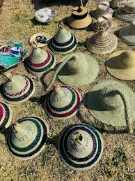

Events Calendar · don't miss out
🎶 This Month (March)
- March 22: Porch concert – 6pm @ Highland ave
- March 25: Community dialogue: “Future of main street”
- March 28: Youth open mic & video showcase
- March 30: Community cleanup (meet at firehouse)
April (Preview)
- April 5: Seed swap & farmers fair
- April 12: Interview skills workshop (with video)
- April 19: History walk – old town Teyateyaneng
- April 26: Basotho Day – traditional dress, stories
📸 Photos from past events

